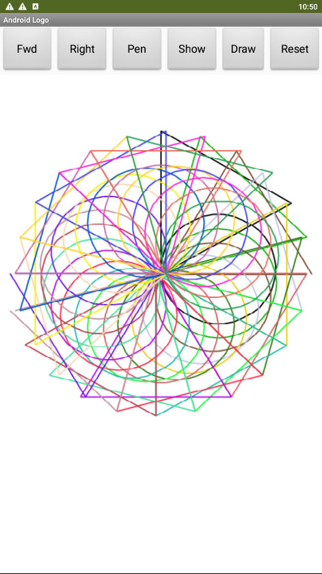
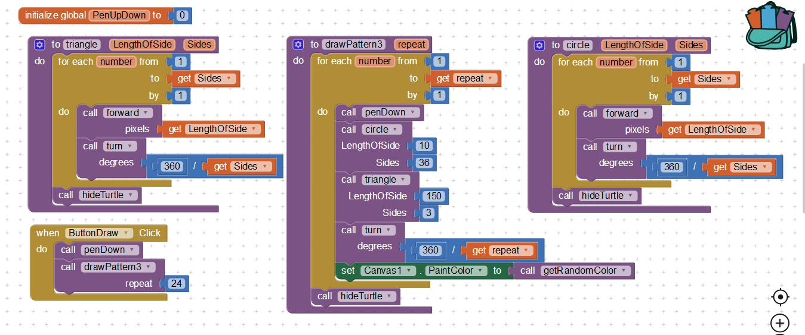
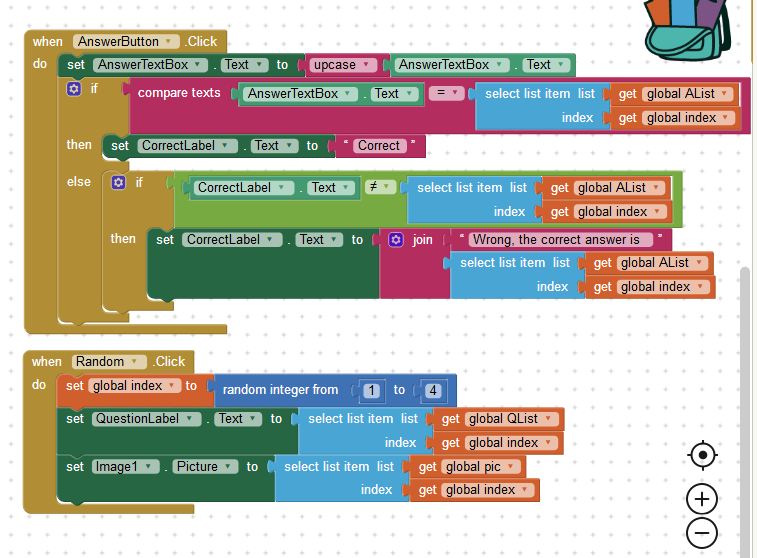
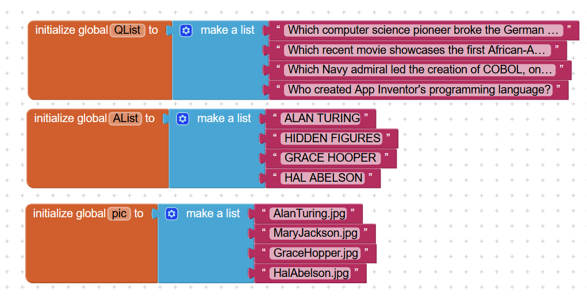
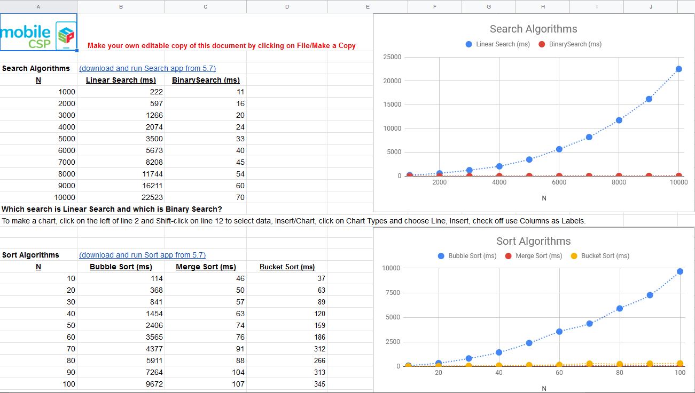

Q1:Include a screenshot of an interesting design that your Logo app made AND a screenshot of the code that created it.
A1:


Q2:Describe in your own words, with a specific example from Logo, how our choice of abstractions (commands) in this lesson provides us with the ability to solve problems that couldn't be solved with the abstractions (commands) used in Logo Part 1.
A2:In our Logo 2 app, we had commands of turning in certain degrees depending on sides and how far we can go move in pixels. This made a huge difference in making shapes such as triangles, stars, and more. In Logo 1, our app did not have degrees, but rather only pixels forward and backwards. It had no commands on turning on certain degrees which made it literally impossible on making shapes like triangles which needed specific angles. Our problems were turning and using degrees, but now it is solved in our Logo 2 app.
Q1:(POGIL) Define a pseudocode algorithm that will efficiently play the guessing game.
A1:
Guess half of input value (Max + min /2) If higher, half of the guess value, repeat until lower If lower, divide half of the guess + guess Check if the guess is too big or small Repeat until guess is correct and is equal to input value
Q2:(POGIL) To guess a number between 1 and 100, what's the maximum number of guesses your algorithm would take?
A2:The maximum number of guesses from our algorithm would be 7 to find a number between 1 and 100.
Q3:(POGIL) To guess a number between 1 and 500, what's the maximum number of guesses your algorithm would take?
A3:The maximum number of guesses from our algorithm would be 8 guesses to find a number between 1 and 500.
Q4:Suppose you have a deck of cards and you want to find the Ace of Spades. If the deck is shuffled, which is the best search algorithm to use and why?
A4:Sequential because the cards are not in order, rather random and we are trying to find our target, the Ace of Spades.
Q5:Give an example of a search problem you encounter in everyday life. Does it use sequential, binary, or some other search algorithm?
A5:Looking for my homework in my homework folder is an example of a search problem I encounter everyday. It uses sequential search.
Q1:Bubble and Merge Sort are referred to as comparison sorts because the values of the two pieces of data are compared during each step. Why are the radix and bucket sort not comparison sorts?
A1:Bucket and radix sorts are sequential sorts so they look at number by number, value by value, etc. They do not compare and replace like the comparison sorts.
Q2:Which sort do you think would be the fastest if you had to sort more than one deck of cards? Why?
A2:The merge sort would be the fastest since it is one of the faster sorts and can combine and merge piles easily.
Q1:Describe the significance of the global variable index. How is indexing used with lists in this app?
A1:The global variable index sets the number of the list and where to start. Indexing is used with list to describe and explain to the app what question, answers, pictures, etc to choose from the list. The index indicates the positioning and order of the questions, answers, and pictures.
Q2:Describe how parallel lists were used in this app. Why was the parallel structure of the lists necessary?
A2:The parallel structure was used as an indicator and was necessary as it gave a value order to each question and how each question had a corresponding image and text to it. If there was no parallel structure, then everything will be all over the place and won't match.
Q3:Include screenshots of your code for exercises 2 and 3 from the Enhancements section.
A3:

Q4:Include a screenshot of the code that added your extra question (exercise 4) AND explain why the code for the buttons worked without any changes after the addition of the extra question.
A4:

The code did not need any changes as it was already parallel and matched with all other questions, answers, and pictures. All we had to do was add a new slot for the fourth question, no other changes were needed for buttons since the list was already parallel.
Q1:Describe your solution for the second project that added a Search button. Provide a SCREENSHOT of the search button click code that uses a complex algorithm with loops and lists. Why was a loop necessary?
A1:Our solution for the Search button was to have a loop of number and the length of the list, so it can identify how many items there are and how much to move by every time. A loop was necessary because if the person wanted to search
a question over and over, it would need to loop and go back to those numbers and indexes of the list. If it never looped, then it would only work for one time and not be able to search anymore, but due to the loop, it allows the search button to function infinitely
to the index of the list.
Q2:Write AP text-style pseudocode for a linear search that searches through a list to find an item x. It should display found if the x is equal to an item in the list.
A2:
Repeat # of items in Length of List If text contains x then display found If text does not contain x then continue searching through list by 1
Q3:Give brief descriptions of the enhancements you added to your app for the third project, a quiz topic of your own choosing. Provide SCREENSHOTS of important blocks and describe how you used them to solve certain programming problems.
A3:Some enhancements we added to our app were hints to every question and sounds if the player answered correctly or incorrectly. Some important blocks are our NextQuestion procedure and the blocks inside it. The NextQuestion procedure
allowed the app to continue and progress on with the questions. We needed a way to keep our questions going and the app going so our NextQuestion procedure is crucial to our program or else you wouldn't be able to move on to other questions. It solved the
movement of questions and the accessibility of the questions and app so players can move on to other questions and continue to learn.

Q4:To practice for the Create project prompt, grab a SCREENSHOT of a program code segment from your project that implements an algorithm that includes two or more algorithms within it and includes mathematical and/or logical concepts. An ideal algorithm is a procedure that you created that includes calls to other procedures that you created, where at least one of those includes math or logic (ifs or loops). Describe how each of the two algorithms within the bigger algorithm functions independently as well as in combination to form a new algorithm. Basically, answer 2c!
A4:

Basically in the screenshot, there are multiple algorithms but they all fall into one big unified function, the CheckAnswers. AddPoint and LosePoint contributes to CheckAnswer by representing the points and scores of the player, while CheckAnswers uses these scores
to represent how the player is doing and is also using it for other codes within it such as the CorrectLabels explaining if it is correct or wrong. Both AddPoint and LosePoint allows the app and player to track their scores, the math of +1 and -1 are the ones that moves
the scores up and down while the logic of the items being true allows the points to know if it can be rewarded or not. CheckAnswer is the big one and uses all both algorithms to accomplish its function of checking and adding/subtracting points to alert the player
of their score while explaining if the answer was correct or incorrect and displaying it with sounds.
Q1:Present the results and the analysis you did for each of the experiments in this lesson, -- i.e., the table of running times you observed, the graphs you created, and the conclusions you reached regarding the searching algorithms and sorting algorithms. Provide a clear description, referring to your graphs and your tabulated data (which are included, or linked to), to explain how you arrived at your conclusions.
A1:

In my tables and graph, you can see Linear Search increasing drastically as more and more numbers are increasing, but with Binary Search it does not increase as much as linear search. It has a slower increase rate when compared to linear. With sort algorithms,
you can see merge sort being the shortest time in the long run, then bucket, and finally bubble sort. Both merge and bucket are the faster sorts due to the values of the graph and tables which showed lower times even when the numbers were being increased when
being sorted. My conclusions for the search algorithm is that binary search is the fastest and merge sort is the fastest for sorting algorithms, but binary search can only work on ordered searches.
Q1:(POGIL) A password scheme consists of a minimum password length and the different types of symbols (i.e., letters, numbers, specials) that can be used in the password. Using the Password Strength Calculator, determine the optimal scheme for withstanding a brute force attack of at least 10 years by an ordinary PC performing 100 million tests per second.
A1:An optimal scheme are 9 letters with uppercase or lowercase letters, numbers and special computer characters which will give 12.8 years to crack.
Q2:(POGIL) According to this 2012 article, a password-cracking computer can try 350 billion passwords per second. How would you have to modify your scheme to withstand a 10-year attack by this specially designed computer?
A2:Change the scheme to 11 letters with uppercase or lowercase letters with numbers and special characters will give 17.9 years to crack.
Q3:(POGIL) That article was written in 2012. Password cracking technology has probably gotten a lot better. Suppose the number of passwords that can be checked per second doubles every year, use the Password Strength Calculator to determine an optimal password scheme for the year 2020?
A3:Change the scheme to 10 letters with uppercase and lowercase letters with numbers and special characters will withstand an attack for 10 years.
Q4:(POGIL) For the routes starting and ending at Trinity College, identify the nearest neighbor route and the optimal route. What does this show you about the nearest neighbor heuristic?
A4:The nearest neighbor route would be A first then B and ending with C. The most optimal route would be starting at Trinity College, first go to B, C, then A or fromTrinity College, go to A, C, then B, this would take 7.6 miles total for either one. It shows how the nearest neighbor heuristic is not always the most optimal route, even if you choose the smallest numbers and try to put them all together.
Q1:How do web search tools make it more efficient to find information?
A1:Web search tools saves us time in distance and energy if you think about it. You do not have to walk or ask others, but rather get on and just type and search. It is efficient because we can basically do it anywhere at anytime while saving time by not going anywhere else since we have it in our hands.
Q2:When you type a word or phrase into the Google search engine, what is the search algorithm that is being used? Explain in your own words the process used by Google's search engine.
A2:The search algorithm used by Google is page ranking. It ranks the most relatable subjects to your keywords and shows results of it with pages. Most popular and relevant on the front and slowly becoming less and less popular and relevant as you travel deeper and deeper through the pages.
Q3:What is a captcha? How has the collective efforts of Internet users contributed to analyzing images through captchas?
A3:Captcha is a puzzle filled with distorted letters and pictures that the user must pass by typing or selecting certain keywords or pictures depending on the captcha. Users contributed by showing that they are not robots, but some may use this to their advantage and use it for bots to bypass these puzzles.
Q4:"The architecture of human knowledge has changed as a result of search." Do you agree? Explain your reasoning.
A4:I agree because human knowledge allowed us to expand and explore and everyone thinks differently. With different thinking, there will be more diverse outcomes and these will change the result of search. Some might think of cake, but others might envision cake with designs and decorations, showing human knowledge and its diversity which comes into play of changing the result of searches.
Q5:What are the differences between Figures 4.10 and Figure 4.11 in the book? Why are there differences even though they are both a Google search results page?
A5:In 4.10, it is in English but in 4.11 it turns into Chinese, but in English it talks about Falun Gong with their life. In 4.11, in Chinese, it seems so negative and bad about Falun Gong. They are different because it is more different areas of the world where they have dedicated languages to certain parts. Also, different parts of the world has different rules and powers, China has censorships and control of the internet, so it will display different results.
Q6:How do you think mobile computing might have influenced web searches? Would you retain your search history or delete it? Why?
A6:I think mobile computing had made web searches more efficient and viable to many other devices especially to your phone. I would keep my history just so I can reference back to certain points and not search everything again.
Q7:Would you retain your search history or delete it? Why?
A7:I would keep my history so I can go back and find certain issues or topics that I might want to view again. It also will give me better results in my searches rather than more split ones since it can use my history as a reference.
Q8:Should a researcher place absolute trust in a search engine? Why or why not?
A8:No, a researcher should not place absolute trust in a search engine since it vary depending on what you search, how you word it, and where you are. Your history can affect it and different countries like China can censor and place more biased information onto your results.
Q9:The authors claim "search is a new form of control over information" (p. 111) and "search is power" (p. 145). Why might it be important to talk about the social implications of searching on the Internet?
A9:It is important to talk about social implications when searching on the Internet because it might only show certain sides and make it biased against others. Social media can easily influence and change stories to make it more attracting. We want reliable sources and information, not biased one viewed stories.
Q10:How have search trends been used to predict information? What are the positive and negative impacts of using trends to make predictions?
A10:Search trends have been used to detect certain events such as disasters or epidemics. The positive that it lets everyone know and get prepared. The negative is how it can be inaccurate and a fluke, scaring others for no reason.
Q11:Find and read an article about web searches or algorithms. Write a 3-4 paragraph summary of the article. Include the author's name, the title of the article, the date it was published, and a link to the article.
A11:An article about search engines by Jackie Snow and published on February 26. 2018,
explains and talks about bias in search engines from a woman, Safiya Umoja Noble. Noble faced bias from her own personal experience when she decided to Google the term, "black girls". The results came back with pornography, which did not reflect to what
she wanted at all. She was horrified but not surprised as if she somewhat expected it. Search engines can be biased, like proof from Noble's experience.
Noble explained how the search engine does not represent all but rather for the creators and the majority. They do not represent the minorities like women and it shows just how messed up and our search engines can be even though we use it daily. It is hidden, but
noticeable if you pay attention. Noble wants to argue and explain how it is not fair and how it should not be biased, but rather represents for all.
Many sees search engines as reliable and easy, but like Noble said, there will be bias. To address the bias, she wants to reframe and reposition thinkings and phrases for technology. She wants companies to change and understand what they are providing for others.
Noble continues to explain her book, Algorithms of Oppression, and her views of how technology can be changed. It just needs attention and movement, but she brings up the past of how the engines had improved, but can be better. Overall, search engines
can be a great way to find information, but there will be biased results, so be careful.